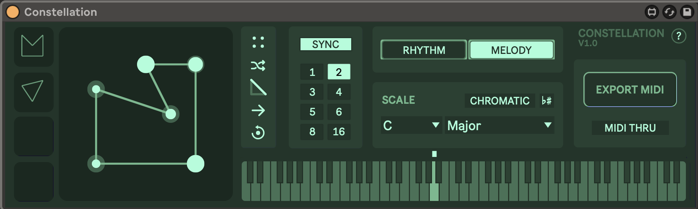
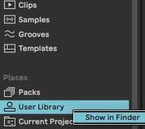

Constellation: User Guide
This page details how to use the Constellation plugin by Elias Jarzombek
Found a bug or have questions/comments? Please send me an email
at
ejarz[at]pm[dot]me, or find me on
Twitter
or
Instagram
– Thanks!
Overview
Constellation is a MIDI sequencer/arpeggiator for Ableton Live. Based on my project Shape Your Music, It allows you to compose melodies and harmonies by manipulating a polygon.
Use the shape editor to create and perform your sequences. Edges represent notes, and the angles at each corner determine the musical interval between notes. Click on the keyboard to set the starting note, or play with MIDI. The color is purely aesthetic and is determined by the starting note.

Installation

To get started, drag the
Constellation.amxd file into Ableton Live. Ideally
you will also want to save it to your
User Library. To do this right click on "User
Library" in the Ableton sidebar and select "Show in
Finder/Explorer". If you don't already have a folder there for
Max Devices, you can create one and place
Constellation.amxd inside.
Constellation requires Ableton Live 10 or later, and Max for Live 8.2.2 or later.
Controls
Editor
-
Clickon a midpoint to create a new point. Clicka point to delete it.-
CMD + Draga point (up/down) to change that note's velocity.
Loop Length
- With Sync on, one loop of the shape will last for the selected number of bars
- With Sync off, you can adjust how fast the shape loops independent of the tempo. This means that larger shapes will take longer to loop.
Output Mode
- Rhythm outputs a single note (useful from drums)
- Melody outputs a melodic sequence
MIDI
- Export MIDI will save the current sequence to a new clip in Session View
- With MIDI THRU off, incoming MIDI WILL control the sequence starting note. This means that you can stack Constellation plugins in series and have the first one control the second.
- With MIDI THRU on, incoming MIDI will NOT control the starting note, so you can jam over the top of the loop. This also means that two Constellation plugins on the same track can play in parallel.
Saved Shapes
-
Clickon one of the empty slots to save the current shape Clickagain to recall that shapeCMD + Clickto remove a saved shape
Editor Tools
- Grid enables snapping to a grid, which is useful for creating quantized rhythms
- Randomize generates a random shape
- Note Duration adjusts the note duration for all notes in the sequence
- Playback direction changes the direction of playback. This will recalculate the notes based on the new angles.
- Reset clears all but two points
Starting Note
-
Indicates which note the sequence starts on.
Clickon the keyboard or use MIDI input to set this note.
Scale
- Use the dropdowns to select key and mode
-
The
♭♯toggle will sync the device to the global Ableton scale (Live 12 only) - Selecting Chromatic will make all notes available
Keyboard
-
Displays the output MIDI.
Clickon the keyboard to set the starting note.
Techniques
Incremental changes
To create a sequence that evolve over time, try making small changes to the shape. Since the angles control the musical intervals, even small adjustments can have a big impact on the sound.
Multiple in series
By stacking multiple Constellation devices in series, you can create complex sequences. The output of the first device will control the starting note of the second device. This allows you to create evolving sequences that change over time.
Multiple in parallel
With MIDI THRU on, the devices will play in parallel, allowing you to create drum patterns or complex harmonies. In the above video, three devices are playing in parallel to create a drum pattern. They are each set to Rhythm mode, meaning that they each output a single note.